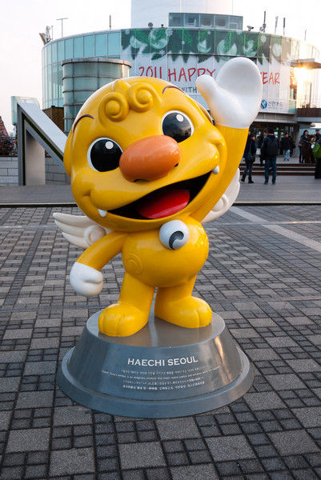
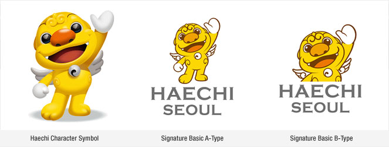
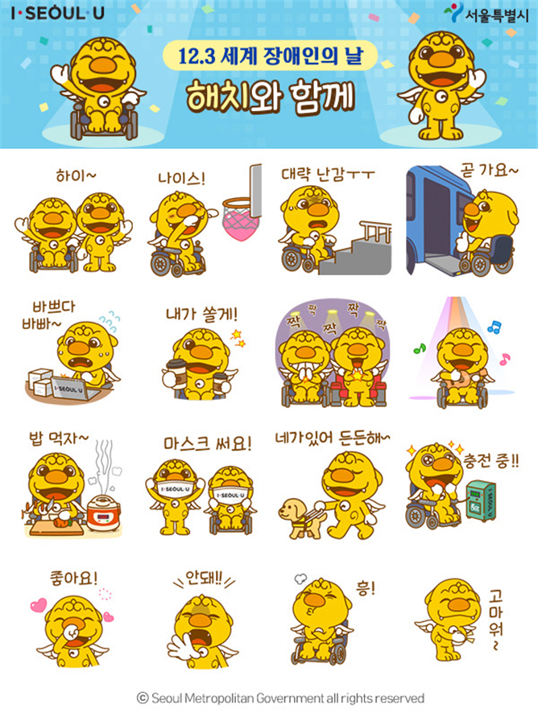

"Mythology & Folktales"
Haetae (haechi)
Presented by: Michelle M. Seo
Background history
In english it is called “the Unicorn-lion” or “an omniscient mythical beast”
The Xezhi is known as Haetae in Korea.
According to Korean records, Haetae’s body is shaped like a lion that has a horn on its forehead.
It has a bell on the neck, and the body is covered with scales. It lives in the frontier areas of Manchuria. Haechi, generally known as Haetae, often appears in myths as a guardian against fire and disasters.
In ancient Korea, Haetae sculptures were used in architecture during the early Joseon dynasty, as their image was trusted to be able to protect Hanyang (now Seoul) from natural disasters and to give law and order among the populace.
It can be totally said that the Haechi is a mythical animal with righteous temperament distinguishing good and evil, punishing the wrongdoers, and guarding important monuments from any danger.
Previous
Next
Haetae in Korea can be said to be different from the Haetae transmitted in China.
Haitai was an animal that only the emperor could use, and it had no horns.
It was portrayed to almost like a lion.
However, in Seoul, it was built with only the horns removed from the Chinese statue of Haitai.
The folk tales handed down in Korean tradition have become to be recognized as a spiritual creature that prevents fire.
In the Donggukse period, which was compiled during the reign of King Jeongjo, On New Year’s Day, a dragon or tiger is drawn on the gate, haitai is in the kitchen, a dog is in Gwangmun, and a chicken is placed between Anchae and Sarangchae.
Haitai is known as a symbol of law, but differently in Korea, it is well known for its image of a familiar spirit creature that suppresses fire.
Therefore, it became the motif of the current fire masco.
Sculptures of the legendary creature Haetae can be spotted around Seoul, often near historical landmarks and other high-profile locations like the National Assembly Building.
Shaped like a lion with a horn on its forehead, the imaginary animal from Korean mythology is known as a guardian that fends off fire and disasters, prompting creative architects to erect a number of sculptures around the city.
Haetae’s influence and likability have been reflected across South Korean society, with a professional baseball team and a major food company named after the imaginary animal, and the creature honored as the symbolic icon of the South Korean capital in 2008.
The relationship between Haetae and Haetae company
 The folk tales handed down in Korean tradition have become to be recognized as a spiritual creature that prevents fire.
Although the logo has been modified without the statue of Haetae, this company represents the most popular and loved Korean confectioneries.
The folk tales handed down in Korean tradition have become to be recognized as a spiritual creature that prevents fire.
Although the logo has been modified without the statue of Haetae, this company represents the most popular and loved Korean confectioneries.
Haetae commodification

Haechi is depicted with a humorous and playful expression in real life presented as a mascot of Seoul, Korea to invite people to feel welcomed.
Seoul has officially used Haechi (origin of Haetae) as the city’s symbol since May 13, 2008


Korea presents various emoticons for messengers using different characters, which Seoul’s official government has also created
Kirin Designer: Haetae pajama
Korean mythology creatures are often considered and used as designs in different forms